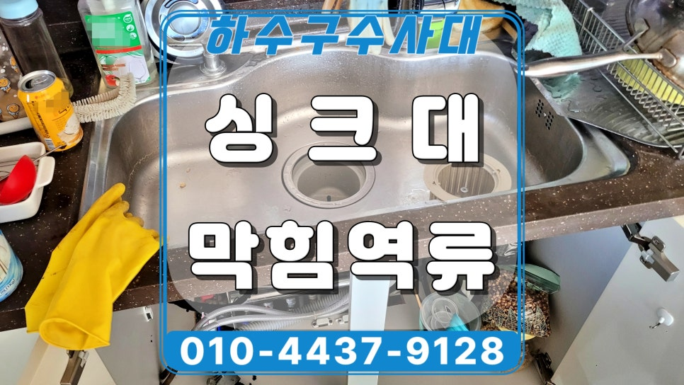
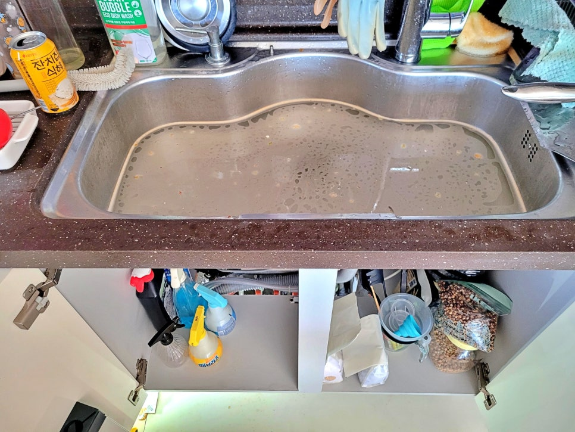
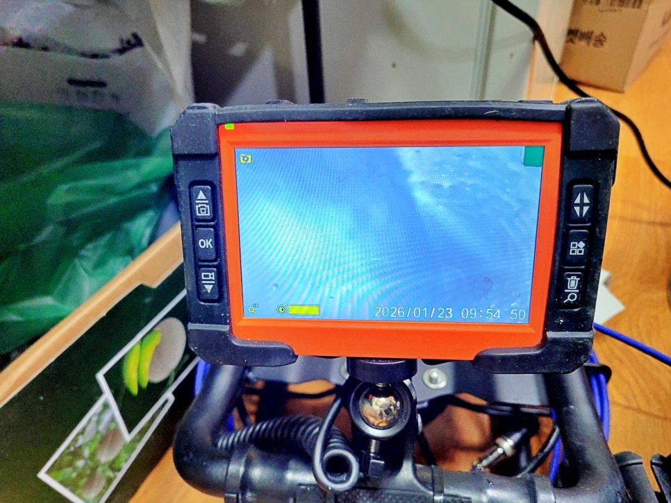
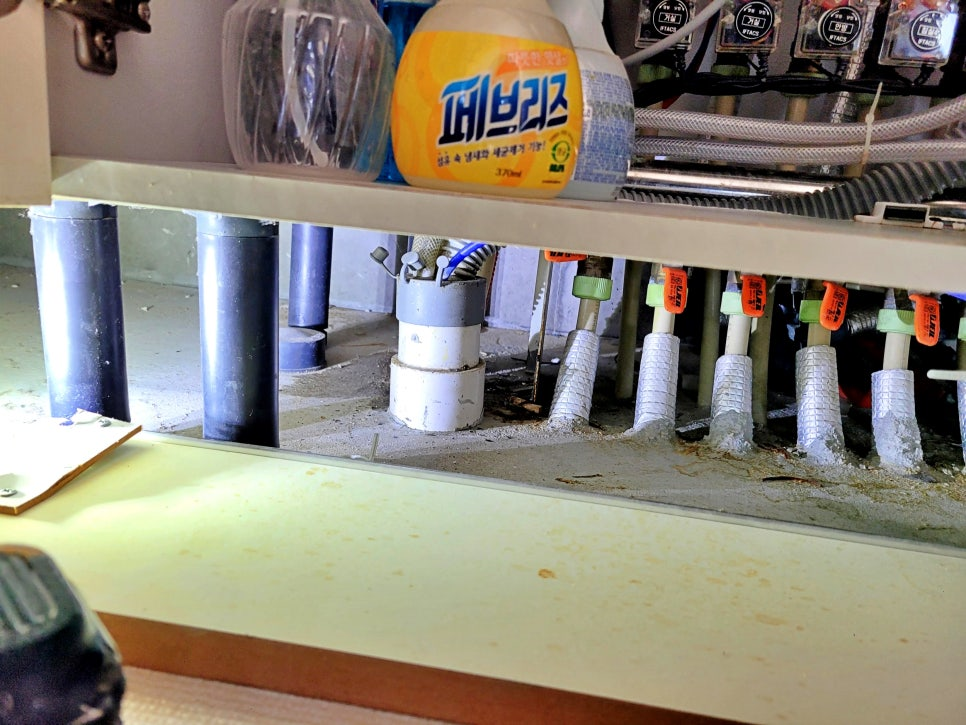
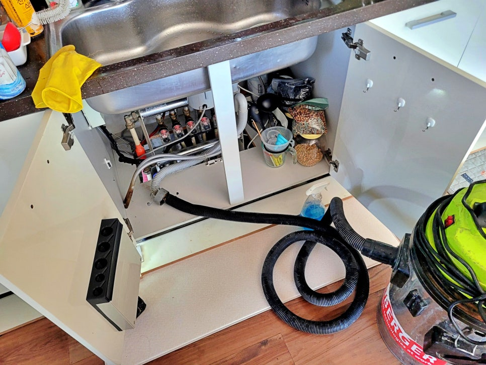
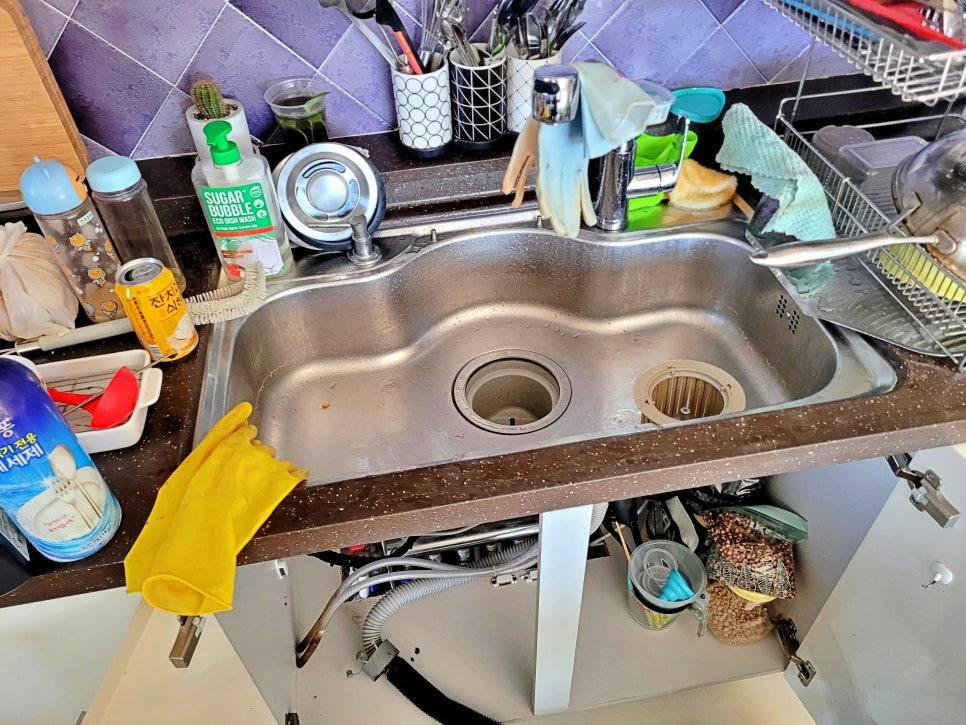
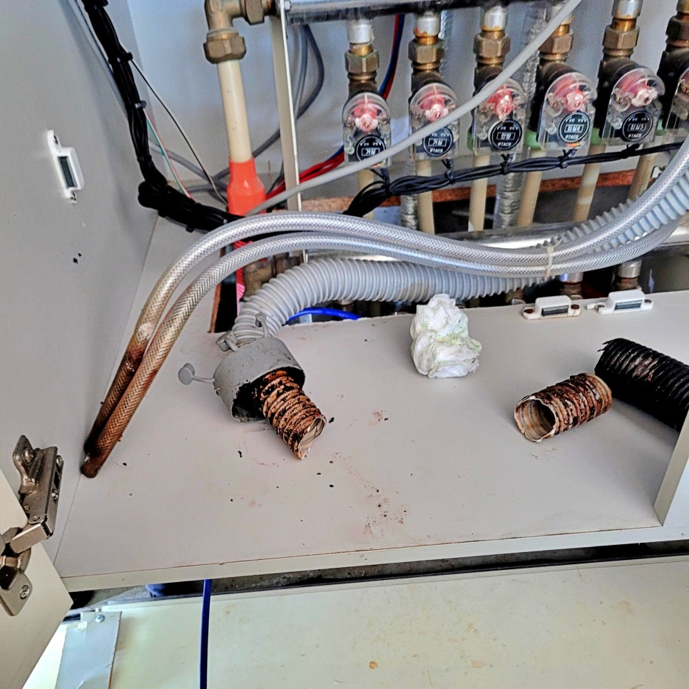

🏠 수원 광교 싱크대 배관막힘 역류 잘 뚫는 곳을 추천합니다
수원 싱크대막힘 전문 시공 후기

📋 작업 개요
- 위치: 수원
- 서비스 유형: 싱크대막힘, 하수구막힘, 배관막힘, 역류해결, 뚫는업체, 배관청소, 고압세척
- 작업 일시: 2026. 1. 28. 9:27
- 업체명: 하수구수사대 (010-5615-2118)
🔍 문제 상황
수원 광교 싱크대 배관막힘 역류,
하동 아파트 배관막힘 잘 뚫는 곳
추천합니다.
환영합니다.
수원 광교 하동 싱크대 배관막힘 역류
잘 뚫는 업체 하수구수사대입니다.
오늘 저희가 다녀온 현장 후기는
수원 광교 하동의 한 아파트에서
싱크대 배관막힘 역류가 발생해
출동한 실제 사례입니다.
싱크대 배관막힘으로 역류한 현장
수원 광교 싱크대 배관막힘 현장은
화면과 같이 고객님께서 설거지를
하던 중, 배수가 되지 않고 역류하는
현상이 발생한 것인데요.
과연 이번에는 저희가 이 문제를
어떻게 해결해 드렸는지 그 과정을
지금부터 자세히 소개하겠습니다.
1. 내시경 카메라로 배관막힘 원인 파악
내시경 카메라 점검 과정 모습
수원 광교 싱크대 배관막힘 현장에
도착하자마자 가장 먼저 하수구
내부의 정확한 원인을 파악을 위해

🔎 원인 분석
💡 전문가 진단: 수원 광교 싱크대 배관막힘 역류,하동 아파트 배관막힘 잘 뚫는 곳추천합니다.
내시경 카메라를 투입했는데요.
검사 결과,
싱크대 호스부터 아래층 출수구까지
오랜 시간 동안 쌓여 굳어버린 기름
슬러지와 음식물 찌꺼기가 내부를
빈틈없이 막고 있었습니다.
수원 광교 싱크대 배관막힘 현상은
배수 문제뿐만 아니라 악취 발생
원인이 되기도 하기 때문에 신속히
해결해야 했죠.
2. 싱크대 배관막힘 3단계 통수 작업
석션 장비로 호스 내부를 청소하는 장면
이번 문제를 해결하기 위해 3단계에
걸친 통수 작업을 진행했는데요.
1단계 석션 작업,
강력한 석션 장비를 이용하여 호스
내부에 가득 찬 기름 찌꺼기와 고인
오수를 신속하게 제거해 작업 공간을
확보했습니다.
2단계 플렉스 샤프트 작업,
특수 샤프트 노즐을 하수구 내부로
투입하여 싱크대 배관막힘 내벽에
단단하게 붙어 있던 기름 덩어리를
정밀하게 분쇄 제거했습니다.

🔧 작업 과정
3단계 반복 청소 작업,
내시경을 통해 실시간으로 내부 상태를
확인하며 청소가 미흡한 부분을 파악 후
추가적인 샤프트 작업을 진행해 완벽한
세척 상태 완성했습니다.
내시경 카메라로 배관 상태를 점검하는 모습
수원 광교 싱크대 배관막힘 1차 통수
작업 후 내시경 카메라를 통해 청소가
미흡한 곳을 확인하는 장면인데요.
추가 샤프트 통수 작업 과정
꺾이는 엘보 구간 내벽에 붙은 기름이
확인되어 샤프트 노즐을 추가 투입해
집중적으로 청소를 진행했습니다.
그런데 다시 한번 내시경 카메라를
통해서 엘보 구간에 붙어 있던 남은
기름 찌꺼기들은 제거됐지만 입상관
구간에 미흡한 부분이 확인이 되어
위 화면과 같이 마지막 샤프트 통수
작업을 진행했습니다. 저희가 이렇게
실시간으로 내시경 화면을 확인하며
배관 청소하는 것을 옆에서 지켜보신
고객님께서는 너무 신기해하셨고요.
수원 광교 싱크대 배관막힘 청소 후 모습
마지막 내시경 카메라 점검 결과
수원 광교 싱크대 배관막힘 원인이
위 화면과 같이 깨끗하게 해결된
것이 확인됐습니다.
3. 하동 싱크대 배관청소를 마치며
석션 장비로 주변 청소를 진행하는 모습
싱크대 배관막힘 통수 작업을 마친 후,
배수 테스트 진행해 막힘없이 시원하게
배수되는 모습을 고객님과 함께 오랜
시간 확인을 마쳤고요.
배관 청소를 진행한 주변을 석션 장비와
물티슈로 깔끔하게 뒷정리까지 진행해
고객님께서 크게 만족해하셨습니다.
오늘 소개한 수원 광교 싱크대 배관막힘
원인은 역시나 기름과 음식물 찌꺼기가


✅ 작업 완료
호수 및 배관을 막아서 발생한 것이고요.
수원 광교 싱크대 배관막힘 역류
잘 뚫는 업체인 저희 하수구수사대가
3단계 정밀 통수 작업으로 신속하게
해결해 드렸습니다.
지금까지
"수원 광교 싱크대 배관막힘 역류 잘
뚫는 곳을 추천합니다" 시공 후기를
끝까지 읽어주셔서 감사합니다.
#수원광교싱크대배관막힘 #수원광교싱크대막힘잘뚫는곳 #수원광교싱크대역류전문 #수원하동싱크대막힘전문 #수원하동배관막힘잘뚫어주는업체 #수원광교하수구업체 #수원광교싱크대배관청소업체




⚠️ 주방 싱크대 배관 막힘 예방 수칙
- ✅ 기름기가 묻은 식기나 프라이팬은 설거지 전 키친타올로 반드시 기름때를 닦아내세요.
- ✅ 주기적으로 싱크대 개수대에 뜨거운 물을 가득 받아 한 번에 내려 배관 내부 기름을 씻어내세요.
- ✅ 배수구 거름망을 미세한 필터로 사용하시고 음식물 찌꺼기가 틈으로 새어 들지 않게 관리하세요.
- ✅ 베이킹소다와 식초를 뜨거운 물과 함께 일주일에 한 번씩 부어주면 배관 살균과 막힘 예방에 좋습니다.
💡 핵심 정리
- 확실한 장비 작업(내시경 점검 및 샤프트 스케일링)으로 원인을 뿌리 뽑습니다.
- 작업 후 1년 이내에 동일한 부위 재발 시 100% 무상 A/S 서비스를 보장합니다.
- 서울 · 경기 · 인천 전 지역에 24시간 언제든 긴급 출동할 수 있도록 항시 대기 중입니다.
❓ 자주 묻는 질문 (FAQ)
🚨 수원 싱크대막힘 문제로 고민이신가요?
정확한 원인 진단과 확실한 시공으로 재발 없는 해결을 약속드립니다.
24시간 긴급 출동 | 서울 · 경기 · 인천 전지역 | 1년 내 재발 시 무상 A/S